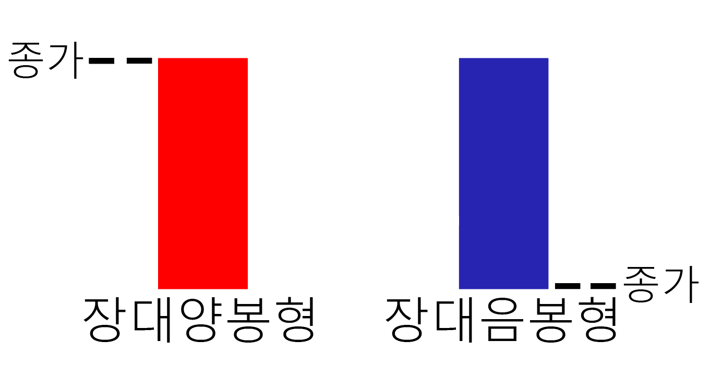
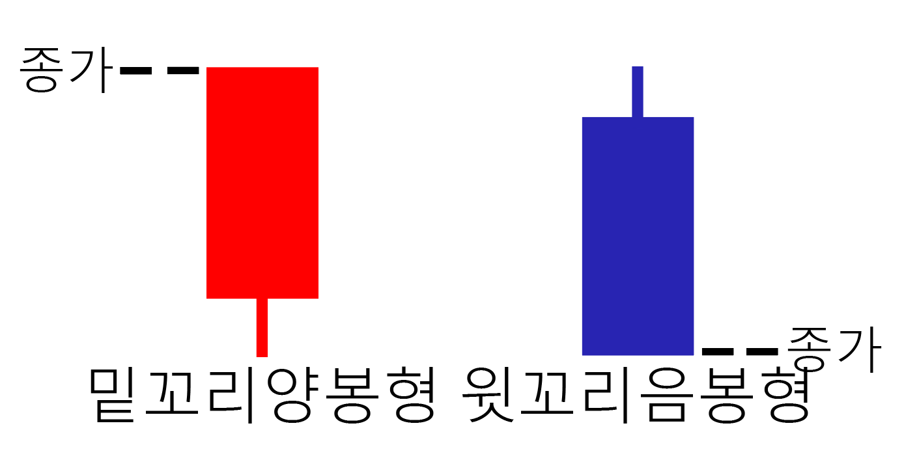

3. 캔들의 종류
여러분들은 캔들 종류가 많다는 것을 알고 계셨나요? 여러분들은 지금 '캔들에 종류가 있어..?'라는 생각을 하고 있을겁니다.
제가 이번 시간부터 그 질문에 대답을 해드리겠습니다.

-장중 시가와 종가의 등락폭이 크다
-강하게 상승하고 마감
-몸통이 이전 봉의 크기보다 매우 길다는 뜻이다
-상승장에서 나타난 장대양봉은 '강한 매수세로 상승이 조금 더 지속'이라는 판단을 내릴 수 있습니다
-장중 기사와 종가의 등락폭이 크다
-크게하락하며 마감
-이전 날들의 크기보다 매우 길다
-하락장에서 나타난 장대음봉은 하락지속형이다
-상승장 중 특히 급상승 후 장대음봉이 등장하면 '이익실현 매물의 본격화'로 해석되어서 하락을 예고하는 경우가 많다

-종가=고가, 윗꼬리가 없다, 시가와 저가가 다르다
-상승장세를 반영하는 상승지속의 가능성으로 작용한다
-종가=저가, 밑꼬리가 없다, 시가와 고가가 다르다
-윗꼬리는 고가에서 매도세가 물량을 내놓으면서 하락 마감 했기 때문에
추가하락의 예상한다